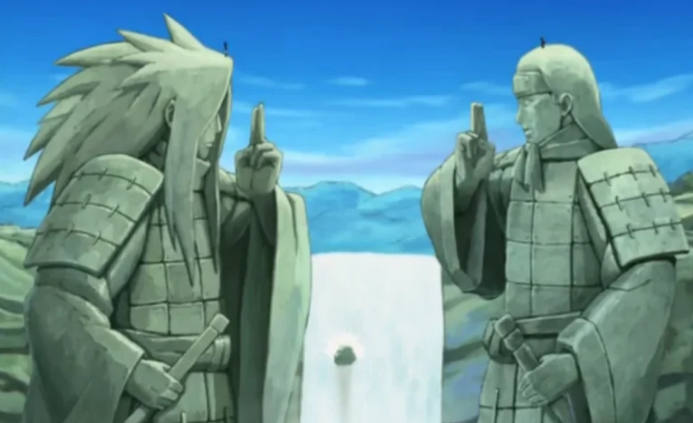

Animes
Naruto: A Força dos Laços e da Superação

Oi pessoal, tudo bem? Hoje vou falar de um clássico absoluto que marcou a minha infância e continua sendo um dos meus grandes amores no mundo dos animes: Naruto!
Sinopse: Naruto Uzumaki é um jovem órfão rejeitado pelos moradores de sua própria vila por carregar dentro de si a Raposa de Nove Caudas, um monstro que quase destruiu o local no passado. Determinado a quebrar o preconceito e ser reconhecido por todos, Naruto treina para se tornar um ninja e alcançar o posto máximo de Hokage, o líder da Vila da Folha.
O que torna Naruto tão cativante não são apenas os combates ninja fantásticos ou as estratégias mirabolantes. O verdadeiro coração dessa obra está na empatia e na dor compartilhada. A dinâmica entre o Naruto e o Sasuke é uma das construções de rivalidade e amizade mais duradouras da cultura pop.
Mesmo lidando com problemas de ritmo e excesso de preenchimentos (fillers) ao longo de suas sagas clássica e Shippuden, arcos incríveis como a invasão de Pain ou a história secreta de Itachi Uchiha elevam o anime a patamares emocionantes incomparáveis. É uma jornada inesquecível sobre nunca desistir do seu caminho ninja!
Ficha Técnica
- Título original: Naruto / Naruto Shippuden
- Ano de lançamento: 2002 / 2007
- Direção: Hayato Date
- Criador original: Masashi Kishimoto